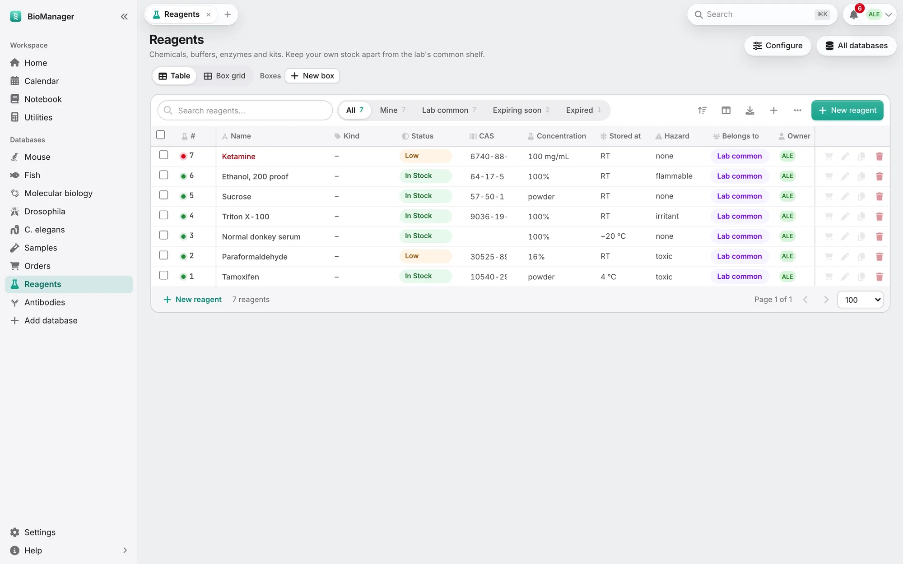
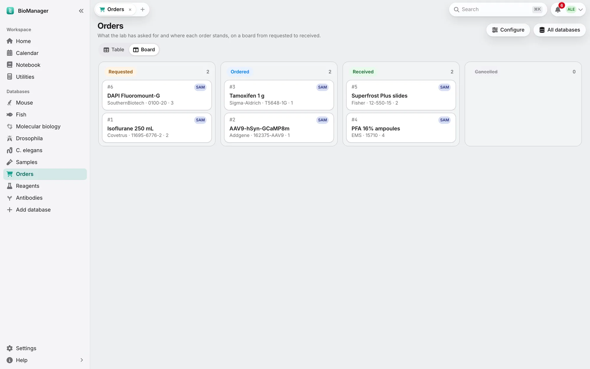

数据库
样本、订购、试剂、抗体、病毒
样本、采购、试剂、抗体、病毒、引物和细胞系。
同一套机制，八种起点，各有自己的列和状态：
| 样本 | 组织和材料，关联到它所来自的动物，存放在室温、4 °C、−20 °C、−80 °C 或液氮（LN₂）中的冻存 盒位置上，测量值以数字记录：Conc.（浓度）及其单位、260/280、260/230、Volume (µL)（体积）。 状态：可用、在用、用完、已丢弃。 |
|---|---|
| 订购 | 实验室申请购买的东西：供应商、货号、数量、价格、经费账号。状态：已申请、已下单、 已到货、已取消——可以用表格，也可以用看板（Board）拖动卡片。 |
| 试剂 | 数量、浓度、CAS 号、存放温度、危险性、批号和有效期。状态：有库存、不足、用完、 已丢弃。 |
| 抗体 | 宿主、克隆性、克隆号、偶联物、反应种属、应用、稀释度、亚型、RRID，以及每管放在哪里。 |
| 病毒 | AAV、慢病毒、狂犬病毒及其他载体：血清型、制备所用的质粒（制备自（Made from））、启动子、 表达内容、滴度、生物安全等级、制备日期，以及每份分装在 −80 °C 冻存盒中的位置。状态：有库存、不足、用完、已丢弃。 |
| 引物与寡核苷酸 | 序列（5′→3′）、方向、靶标、配对引物、储存浓度 µM 和修饰。Length（长度）、 GC % 和 Tm 由序列自动算出（最近邻法，50 mM Na⁺，250 nM）。添加引物对（Add primer pair）一次建好 名称-F 和 名称-R，互相注明对方，并排放在盒中。状态：已订购、有库存、不足、用完、 已丢弃。 |
| 细胞系 | 每个细胞系或克隆的冻存管：物种、亲本、代数、冻存日期、每管细胞数、培养基、 筛选、支原体检测结果和日期，以及在液氮冻存盒中的位置。状态：有库存、已复苏、用完、已丢弃。 |
| 自定义列表 | 完全由你定义。 |
订购：从下单到上架
- 新建订购（New order）。物品、供应商、货号和数量是必填项（带星号），所以不会有填了一半的订购发出去。 输入实验室以前用过的物品名或货号并选中它：供应商、价格和经费会按上次自动填好。 实验室管理员会收到每个新申请的通知。
- 跟进进度。状态筛选标签——已申请、已下单、已到货、已取消（Requested、Ordered、Received、Cancelled）——点一下就能看到每个阶段；申请人 会在每次状态变化时收到通知。
- 到货了。标记为已到货后，BioManager 会问加入库存？（Add it to stock?）：新建一条试剂、抗体或病毒记录，名称、 供应商、货号、批号、数量和有效期都已填好，打开后你只需补上存放位置。（之后，订购上的 入库（To stock）按钮也能做同样的事。）从此订购上显示 Reagents #8，试剂上显示它来自哪个 订购；两者可以互相跳转。
- 快用完了？任何试剂、抗体或病毒上的购物车按钮再次订购（Order again），会打开一个新订购，带上它的详细信息，以及上次订购时的 数量、价格和经费。如果它已经在订购中，按钮会显示订购中（On order）， 新订购打开时会附一条备注，注明那个未完成的订购和申请人。
所有库存通用
- 我的（Mine）和实验室公用（Lab common）把你自己的库存和实验室共享的分开。
- 即将过期（Expiring soon，30 天内）和已过期（Expired）筛选标签；已过期和库存不足的也会显示在首页。
- 冻存盒视图（Box grid）把物品放进冰箱里的冻存盒；和其他地方用的是同一批盒子。盒子的存放条件（Stored at，−80 °C、LN₂……） 会传给放进去的东西，移动盒子时它们也跟着移动。放进盒子但没指定位置的物品会占用下一个 空位。把管子标为用完、空或已丢弃会释放它的位置；位置备注会保留它原来在哪。新建冻存盒（New box）有 数量（How many），可以一次建好一整个冻存架。
- 记录对话框底部的引用此记录的实验记录本页面（Used in notebook pages）列出链接到它的页面
（
@antibodies 5；见实验记录本）。 - 配置（Configure，创建者或管理员）：名称、要跟踪什么、选项和状态（重命名会同时更新已有物品的标签）、 你自己的列，以及哪些字段是新建物品必填（needed for a new item）。
- 质粒列（病毒的制备自（Made from），或你在配置里以 A plasmid 类型添加的列）：输入质粒的 编号或名称，或从列表里选，单元格就会链接到那个质粒。质粒的存放（Storage）标签页会在 由此质粒制备（Made from this plasmid）下列出所有用它制备的东西。


这一页对你有帮助吗？
没有